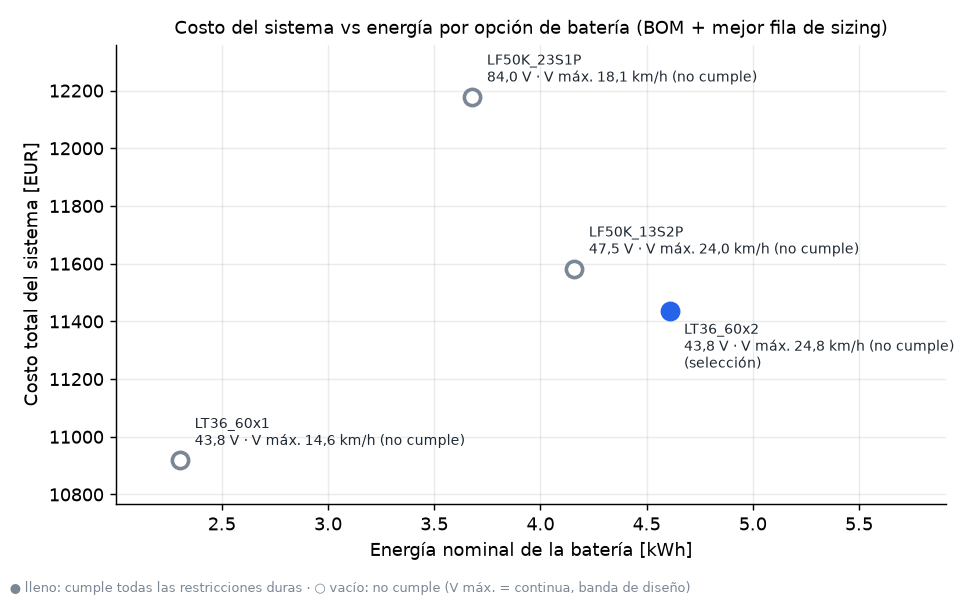
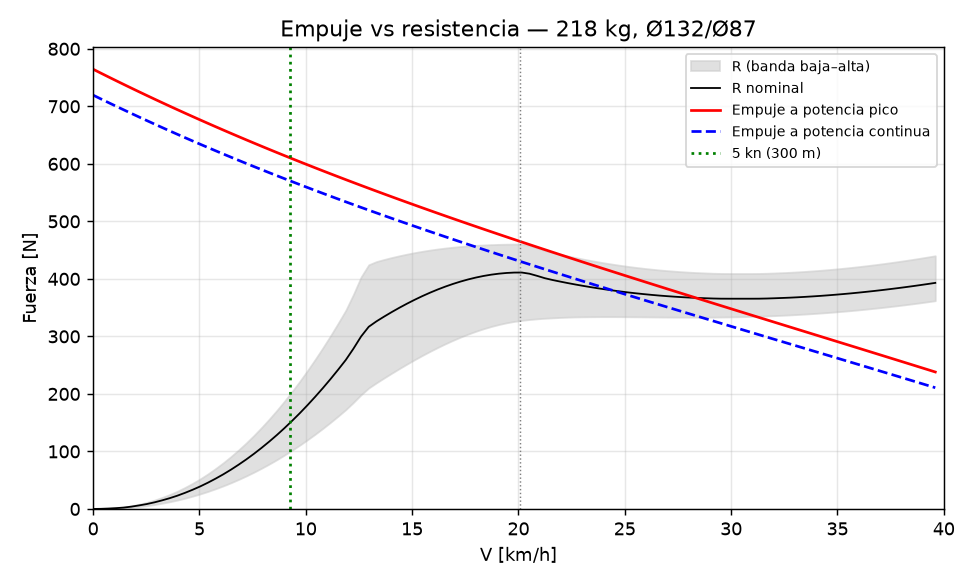
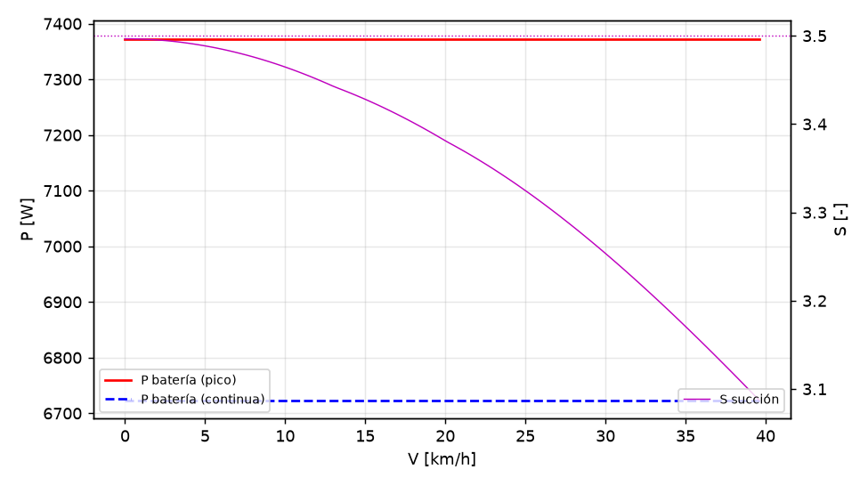
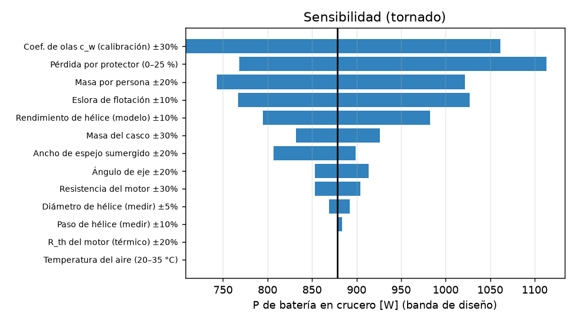

Documentos
Documentación del proyecto
Los mismos archivos Markdown del repositorio, renderizados. Los números entre marcadores se regeneran desde los resultados.
Empezar aquí
- P1-J — Waterjet eléctrico inboard para el jet boat de Jorge (2,30 m)README.mdPaquete de ingeniería del prototipo: cálculo, CAD paramétrico verificado, planos, BOM, firmware y pruebas. Todo se regenera desde inputs.yaml con python run_all.py. Los números…
- PENDIENTES_GASPAR — lo que hay que hacer en el mundo físico, en ordenPENDIENTES_GASPAR.mdCada ítem tiene un criterio de cierre. No se pasa al bloque siguiente con uno abierto, salvo que se diga lo contrario. Después de cada medición: cargar el valor en inputs.yaml…
- Checklist de salida — waterjet eléctrico (jet boat de Jorge, Als)checklist_salida.mdCasilla sin marcar = no se sale. Una sola vez antes: T0–T2 aprobados y bloqueo H-1 (estabilidad) cerrado (06 §5, §8).
Memoria técnica
- 01 — Investigación: waterjet eléctrico inboard para el jet boat de Jorge01_investigacion.mdResumen de lo que se aprendió, con la fuente de cada dato. El detalle y los links están en research/: R10a (toma), R10b (auditoría del plano), R11 (componentes y precios), R12…
- 02 — Memoria de cálculo del waterjet (sizing.py)02_calculos.mdTodo sale de sizing.py y de los modelos de p1calc/ (hull, planing, waterjet, motor, power), leyendo inputs.yaml. Los casos estructurales están en 04_diseno/structural_*.py.…
- 03 — Arquitectura: qué propulsión para el jet boat de Jorge03_arquitectura.mdMatriz ponderada de seis arquitecturas, recomendación y plan de fabricación. Los puntajes viven en inputs.yaml → architecture_matrix y los procesa arquitectura.py; la comparación…
- 05 — Fabricación del waterjet P1-J: qué se hace cómo, impresión, mecanizado, soldadura, CNC, anodizado y ensayos05_fabricacion.mdLas tablas entre <!-- FAB:… --> las genera 04_diseno/probetas/tabla_fabricacion.py (lo llama build_probetas.py, paso 6e de run_all.py) desde resultados/manifest.json, bom.csv,…
- 06 — Ensamblaje y pruebas del waterjet06_ensamblaje_y_pruebas.mdEtiquetas: [VERIFICADO: fuente] · [CALCULADO] · [ESTIMADO: base] · [SUPUESTO]. IDs de pieza: 04_diseno/README.md y resultados/manifest.json. Ítems de compra: columna ID de…
- 07 — Roadmap P2: qué mejorar después del prototipo07_roadmap_P2.mdQué cambiar en la segunda iteración del waterjet, en qué orden y con qué disparador medible: nada de esta lista se hace "porque sí"; cada ítem se activa con un resultado de las…
Diseño, FEA y electrónica
- 04 — Diseño detallado (waterjet P1-J)04_diseno/README.mdTodo se regenera con python run_all.py desde la raíz; cada script también corre solo.
- FEA de las piezas críticas del waterjet — P1-DRV-03, P1-REV-01, P1-STE-01, P1-INT-02, P1-CTL-0204_diseno/fea/README.mdFEA lineal elástico 3D de las piezas más cargadas del waterjet eléctrico inboard: el pórtico de rodamientos que baja el empuje del tren a la placa base (DRV-03), el bucket de…
- 04_diseno/electronica — Electrónica, cadena de seguridad y control de P104_diseno/electronica/README.mdEtiquetas: [VERIFICADO: fuente] · [CALCULADO] · [ESTIMADO: base] · [SUPUESTO]. Las tablas entre marcas ELEC: las genera calc_electronica.py desde inputs.yaml y…
Decisiones y auditoría
- Registro de decisiones y supuestos — P1-J (waterjet del jet boat de Jorge)decisiones.mdFormato: Decisión · Alternativas · Justificación · Etiqueta · Qué cambia si el dato real difiere. Todos los valores numéricos viven en inputs.yaml o salen de resultados/*.json…
- Auditoría adversarial — P1-J waterjet (Pasada 3)auditoria.mdMétodo: auditores independientes por área (cálculo/física, CAD/estructural, BOM/eléctrico/legal, documentos) que intentan refutar el paquete leyendo código y recalculando a mano;…
Investigación (research/)
- R01 — Videos de referencia V1 y V2 (canal "Clean Energy", @cleanenergy6271)research/R01_videos.mdLeyenda de etiquetas [VERIFICADO: url]: texto o dato leído en esta sesión (descripción, pista ASR, comentario, ficha técnica). [VERIFICADO-visual: url, ~mm:ss]: observado en el…
- R02 — Proyectos comparables: fueraborda impresos, conversiones de trolling motor, long-tail / surface drive eléctricosresearch/R02_proyectos_outboard.mdEtiquetas: [VERIFICADO: [Sx]] quiere decir que el dato está en la fuente Sx, una página que abrí en esta sesión; la URL completa está en §7. [CALCULADO: …] es una cuenta mía…
- R03: proyectos comparables (waterjets impresos, toberas y protectores, rim-driven, eFoil DIY y papers de hélices FDM)research/R03_proyectos_jet_ducted_efoil.mdAlcance: proyectos reales y papers que sirven para decidir entre tres opciones: la cola larga de P1 (motor seco arriba, correa HTD-5M, eje 316 inclinado, hélice comercial de…
- R04 — Jon boats de aluminio < 2,5 m y referencias comerciales (trolling motors / fueraborda eléctricos)research/R04_bote_y_referencias.mdEtiquetas: [VERIFICADO: Sx] = leído en la fuente Sx (lista en §D) abierta en esta sesión; [CALCULADO] = cuenta hecha aquí con datos verificados (fórmula indicada); [ESTIMADO:…
- R05: materiales FDM en agua salobre y selladoresearch/R05_materiales_sellado.mdAlcance. Parte A (materiales): PETG, ASA, PC y PC-blend, PA-CF y PETG-CF, y recubrimiento epoxi, impresos en una Ender-3 S1 (≤260 °C, sin cerramiento) para servicio en agua…
- R06 — Eléctrica: BLDC / ESC (VESC) / kill switch / baterías / normas / corrosión galvánicaresearch/R06_electrica.mdProyecto P1: propulsión eléctrica, mini lancha de aluminio tipo jon boat (< 2,5 m), Als Fjord (Sønderborg). Fecha de la investigación: 2026-10-01. Etiquetas: [VERIFICADO: url] =…
- R07 — Normativa danesa + condiciones de Als Fjord / Als Sund / Flensborg Fjordresearch/R07_dinamarca.mdConvenciones: [VERIFICADO: url] = leído en esta sesión; "cálculo propio" = estadística que calculé sobre datos descargados de esa URL. [ESTIMADO: base] = fórmula/modelo/memoria.…
- R08a — Sourcing BOM eléctrica con envío a Dinamarcaresearch/R08a_bom_electrica.mdProyecto P1 (cola larga eléctrica, jon boat < 2,5 m, Als Fjord). Fecha de consulta de todos los precios: 2026-10-01. Etiquetas: [VERIFICADO: url] = página abierta en esta sesión…
- R08b — Sourcing de la BOM mecánica con envío a Dinamarca (cola larga eléctrica P1)research/R08b_bom_mecanica.mdMétodo y límites. El cupo de WebSearch de la sesión estaba agotado, y Bing/DDG/Brave/Mojeek devolvían bloqueos o basura. Por eso fui directo a los buscadores y API de cada…
- R09 — Métodos de cálculo para sizing.py: resistencia de casco plano, hélice B-series, cavitación, toberas, ejes y térmicoresearch/R09_metodos.mdEtiquetas: [VERIFICADO: Sx] = leído en la fuente Sx de la tabla §8, abierta en esta sesión. [CALCULADO] = cuenta propia con fórmulas verificadas. [ESTIMADO: base]. [SUPUESTO].
- R10a: la toma (succión) del waterjet de Jorge. ¿Está muy atrás?research/R10a_toma_waterjet.mdObjeto: referencias/2026-09-26_plano_preliminar_waterjet_jorge.png, rotulado "PLANO PRELIMINAR – WATERJET PARA JET BOAT 2.30 m". Datos del rótulo: escala 1:10, mm, 26/09/2026,…
- R10b — Auditoría técnica del plano preliminar de waterjet de Jorge (26/09/2026)research/R10b_auditoria_plano_jorge.mdAlcance. Este informe revisa todo el plano menos la toma, que analiza otro agente. Sobre la toma, una sola línea: Jorge tiene razón. En la vista lateral, la rejilla queda a ~140…
- R11 — Componentes comprables para el waterjet inboard de Jorge (motor, ESC, batería, bomba, tren, auxiliares)research/R11_componentes_jet.mdEtiquetas: [VERIFICADO: url] = página abierta con WebFetch en esta sesión; el número está copiado de ahí. [ESTIMADO: base] = memoria, deducción o dato que solo aparece en el…
- R12 — Métodos para dimensionar el waterjet inboard (impulsor, estator, tobera, toma, cavitación, planeo, cargas)research/R12_metodos_waterjet.mdProyecto (nuevo alcance): waterjet inboard eléctrico para un jet boat de 2,30 × 0,80 m, 1 piloto, Δ = 150–230 kg, 5 kW continuos / 7,2 kW máx., impulsor axial Ø108 a ~4500 rpm,…
- R13 — Marco legal y normativo del jet boat eléctrico de Jorge (2,30 × 0,80 m, waterjet inboard; motor de 18,8 kW de catálogo limitado por configuración a ≈ 6,5 kW pico en el eje, 43,8 V)research/R13_legal_jet.mdConvenciones: [VERIFICADO: url] = página abierta en esta sesión, con el texto citado presente (cita en danés o inglés + traducción). [ESTIMADO: base] = deducción o cálculo…
Figuras del cálculo
Generadas por sizing.py y bom.py; explicadas en 02 — cálculos.







